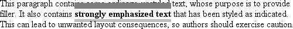
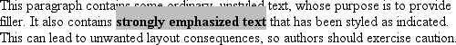
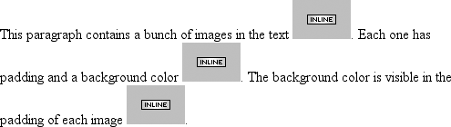
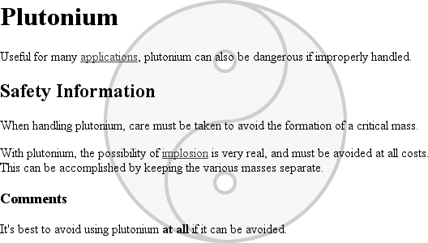
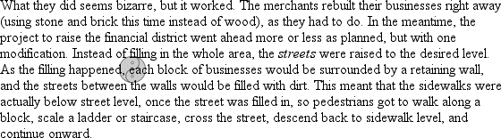
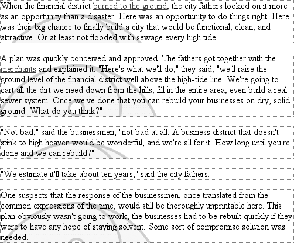
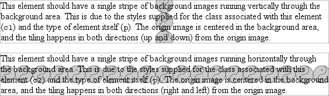
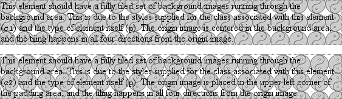
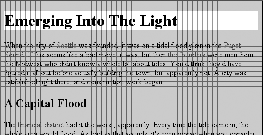
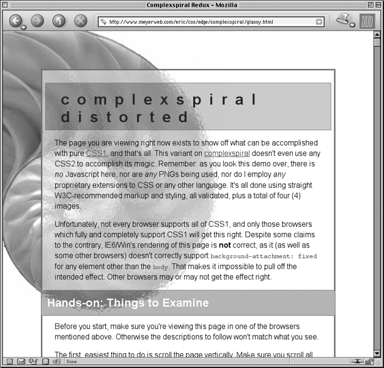

CSS权威指南（3rd）笔记-查缺补漏3 - 边距/背景图片
百分数和外边距
对元素的外边距设置百分数值。百分数是相对于父元素的width计算的，所以如果父元素的width以某种方式发生改变，百分数也会改变。
与之对照，再考虑另一种情况，没有为元素声明width。在这种情况下，元素框的总宽度（包括外边距）取决于父元素的的width。这有可能得到“流式”页面，即元素的外边距会扩大或缩小以适应父元素（或显示画布）的实际大小。如果对一个文档设置样式，使其元素使用百分数外边距，当用户修改浏览器窗口的宽度时，外边距会随之扩大或缩小。具体的设计选择取决于你。
不仅其左右两边的外边距会根据父元素的宽度改变，上下外边距也会随之改变。在CSS中这是期望行为。再来看属性定义，可以看到，百分数值定义为相对于父元素的width。这不仅应用于左右外边距，也应用于上下外边距。因此，给定以下样式和标记，段落的上外边距将是50px:1
2
3
4div p{margin-top:10%;}
<div style="width:500px;">
<p>This is a paragraph,and its top margin is 10%the width of its parent e1ement.</p>
</div>
如果div的width改变，段落的上外边距也会改变。看上去有些奇怪，是不是？这样来考虑，我们认为，正常流中的大多数元素都会足够高以包含其后代元素（包括其外边距）。如果一个元素的上下外边距是父元素的height的一个百分数，就可能导致一个无限循环，父元素的height会增加，以适应后代元素上下外边距的增加，而相应地，上下外边距又必须增加，以适应新的父元素height，如此继续。规范的作者没有简单地忽略上下外边距百分数，而是决定让它与父元素的width相关，不会根据其后代元素的width而改变。
注意：对于定位元素，上下外边距如果是百分数值，其处理会有所不同。
还可以混合使用百分数和长度值。因此，为了将h1元素设置为上下外边距都是0.5em，而左右外边距为浏览器窗口宽度的10%，可以如下声明h1 {margin:0.5em 10% 0.5em 10%;}
在此，尽管上下外边距总保持不变，不过左右外边距会根据窗口的宽度改变。当然，这里假设所有h1元素都是body元素的子元素，而body与浏览器窗口宽度相等。简单地说，h1元素的左右外边距将是h1父元素宽度的10%。
边框和行内元素
对于处理边框和行内元素我们应该很熟悉了，因为其规则很大程度上与外边距和行内元素的相应规则相同。
首先，不论为行内元素的边框指定怎样的宽度，元素的行高都不会改变。下面为粗体文本设置上下边框：strong{border-top:10px solid gray;border-bottom:5px solid silver;}
重申一句，这个语法在规范中是允许的，不过它对行高绝对没有任何影响。但是，由于边框是可见的，所以将会绘制出来，如下图所示。

边框该放在哪里就会放在哪里。
同样地，所有这些只是对行内元素的上下边成立，左右边则是另一回事。如果应用一个左边框或右边框，不仅该边框可见，而且文本会在其旁边显示（即不会覆盖）。
就像外边距一样。如果设置了边框，浏览器计算换行时并不受行内元素所设置的任何框属性的直接影响。唯一的作用是边框所占空间可能把行中的某些部分向后移一点点，而这有可能改变位于行尾的词。
百分数值和内边距
前面提到过，可以为元素的内边距设置百分数值。像外边距一样，百分数值要相对于其父元素的width计算，所以如果父元素的width改变，它们也会改变。
See the Pen 百分数值和内边距 by XmoyKing (@xmoyking) on CodePen.
注意，上下内边距与左右内边距一致，也就是说，上下内边距的百分数会相对于父元素宽度计算，而不是相对于高度。
内边距和行内元素
对于行内元素，外边距和内边距存在一个重要的区别。为说明这一点，下面先来看左右内边距。如果为左右内边距设置了值，左右内边距将是可见的。
注意，行内非替换元素的两端都出现了额外的空背景。这是所设置的内边距。像外边距一样，左内边距应用到元素的开始处，右内边距应用到元素的最后，不过，内边距不会应用到各行的左右两边。对于替换元素也是如此，不过当然这种元素不会跨行。
理论上，对于有背景色和内边距的行内非替换元素，背景可以向元素上面和下面延伸：strong{padding-top:0.5em;background-color:silver;}

当然，行高没有改变，不过由于内边距确实能延伸背景，所以背景应该可见，是这样吗？不错，背景确实可见，它与前面的行重叠，这正是我们期望的结果。
内边距和替换元素
最让人奇怪的是，可以向图像应用内边距，如下：img{background:silver;padding:1em;}
不论替换元素是块级元素还是行内元素，内边距都会围绕其内容，背景色将填入该内边距，如下图所示。还可以看到内边距会把元素的边框推离其内容。

不过，在CSS2.1中，关于如何对表单元素（如input）设置样式还存在一些混淆。例如，复选框的内边距在哪里就不是很清楚。
背景定位
利用background-repeat，可以把一个大图像放在文档的背景中，然后使之一直重复。在此基础上，下面来看如何改变图像在背景中的位置。
例如，可以在body元素中将一个背景图像居中放置，其结果如下图所示：1
2
3body{background-image:url(bigyinyang.gif);
background-repeat:no-repeat;
background-position:center;}

这里在背景上放了一个图像，然后使用值no-repeat使之不能重复。每个包含图像的背景都从一个图像开始，再根据background-repeat的值重复（或不重复）。这个起点称为原图像（origin image）。
- 值：
[[<percentage>|<length>|left | center | right][<percentage>]|<length> | top | center | bottom]?]||[[left|center | right]||[top | center | bottom]] | inherit - 初始值：0%0%
- 应用于：块级元素和替换元素
- 继承性：无
- 百分数：相对于元素和原图像上的相应点（见本章后面“百分数值”一节的解释）
- 计算值：如果指定了
，则为绝对长度偏移，否则，是百分数值
原图像的放置由backgroimd-position属性决定，为这个属性提供值有很多方法。首先，可以使用一些关键字：top、bottom,left,right和center。通常，这些关键字会成对出现，不过（如前面的例子所示）也并不总是这样。还可以使用长度值，如50px或2cm，最后也可以使用百分数值。不同类型的值对于背景图像的放置稍有差别。
还要提到一点：这就是放置背景图像的上下文。CSS2和CSS2.1指出，根据background-position，将相对于元素的内边距边界放置原图像。换句话说，放置图像的上下文是内边框边界，尽管背景区会延伸到外边框边界。并非所有浏览器都能正确地放置图像，有些浏览器就会相对于外边框边界而不是内边框边界来放置原图像。不过如果没有边框，无论是哪一种浏览器，效果都是一样的。
尽管有图像放置的上下文，不过完全平铺的背景图像确实会填充边框区的背景，因为平铺图像会在4个方向上延伸。
关键字
图像放置关键字最容易理解。其作用如其名所表明的，例如，top right使原图像放在元素内边距区的右上角。1
2
3p {background-image:url(yinyang.gif);
background-repeat:no-repeat;
background-position:top right;}
这会在每个段落内边距右上角放置一个不重复的原图像。其结果与将位置声明为right top是一样的。（根据规范）位置关键字可以按任何顺序出现，只要保证不能超过两个关键字个对应水平方向，另一个对应垂直方向。
如果只出现了一个关键字，则认为另一个关键字是center。表9-1显示了等价的关键字。
等价的位置关键字
| - | - |
| 单个关键字 | 等价关键字 |
| center | center center |
| top | top center center top |
| bottom | bottom center center bottom |
| right | center right right center |
| left | center left left center |
所以，如果希望每个段落的中部上方出现一个图像，只需如下声明：p{background-image:url(yinyang.gif)；background-repeat:no-repeat;background-position:top;}
百分数值
百分数值与关键字紧密相关，不过其表现方式更为复杂。假设你希望用百分数值将原图像在其元素中居中。1
2
3p{background-image:url(bigyinyang.gif);
background-repeat:no-repeat;
background-position:50% 50%;}
这会导致原图像适当放置，其中心与其元素的中心对齐。换句话说，百分数值同时应用于元素和原图像。
下面更详细地分析这个过程。将原图像在一个元素中居中时，图像中描述为50% 50%的点（中心点）与元素中描述为50% 50%的点（中心点）对齐。如果图像位于0% 0%,
其左上角将放在元素内边厍区的左上角。如果图像位置是100% 100%，会使原图像的右下角放在内边距区的右下角。
因此，如果你想将一个原图像放在水平方向1/3。垂直方向2/3处，可以声明如下：1
2
3p{background-image:url(bigyinyang.gif);
background-repeat:no-repeat;
background-position:33% 66%;}
利用这些规则，原图像中从图像左上角水平向右1/3、垂直向下2/3处的点将与离包含元素左上角最远的点对齐。注意，如果用百分数设置位置，水平值总是先出现。如果在上例中将百分数值的顺序换一下，图像将放在元素中水平向右2/3、垂直向下丨/3处。
如果只提供了一个百分数值，所提供的这个值将用作为水平值，垂直值假设为50%，这与关键字类似，即如果只指定了一个关键字，另一个关键字则假设为center。例如：1
2
3p{background-image:url(yinyang.gif);
background-repeat:no-repeat;
background-position:25%;}
原图像位于元素内容区和内边距区水平向右1/4，垂直向下1/2处:

你可能会奇怪，background-position的默认值是0% 0%，这在功能上就相当于top left。正是因为这个原因，背景图像总是从元素内边距区的左上角开始平铺，除非你设置了不同的位置值。
长度值
最后，我们来看定位的长度值。在为原图像的位置提供长度值时，这些长度值将解释为从元素内边距区左上角的偏移。偏移点是原图像的左上角。因此，如果设置值为20px 30px，原图像的左上角将在元素内边距区左上角向右20像素，向下30像素的位置上，
这与百分数值大不相同，因为偏移只是从一个左上角到另一个左上量角的偏移。换句话说，原图像的左上角与background-position声明中指定的点对齐。不过，可以结合使用长度和百分数值，得到“二者兼俱”的效果。假设你需要一个背景图像，它要一直延伸到元素的右边，并且要从顶部向下延伸10像素。像以往一样，先指定水平值：1
2
3
4p {background-image:url(bg23.gif);
background-repeat:no-repeat;
background-position:100% l0px;
border:1px dotted gray;}
如果使用长度值或百分数值，可以使用负值将原图像拉出元素的背景区。考虑一个例子，使用一个很大的“阴阳”符号作为背景。有时可能要将其居中，不过如果你只希望其中一部分在元素内边距区的左上角可见，该怎么做呢？没问题，至少从理论上讲是可以做到的。
首先，假设原图像为300像素高300像素宽。再假设只有其右下方1/3的部分可见。可以如下得到所需的效果：1
2
3
4p{background-image:url(bigyinyang.gif);
background-repeat:no-repeat;
background-position:-200px-200px;
border:1px dotted gray;}
理论上负百分数值也是允许的，不过对此存在两个问题。第一个问题是用户代理可能有限制，无法识别负的background-position值。另一个问题是，负百分数值计算起来很有意思。比方说，原图像和元素很可能大小不同而这会导致意想不到的后果。例如，考虑以下规则，其结果见下图:1
2
3
4p{background-image:url(pix/bxgyinyang.gif);
background-repeat:no-repeat;
background-position:-10%-10%;
border:1px dotted gray;width:500px;}

这个规则要求原图像外由-10%-10%定义的点与各段落中同样定义为-10%-10%的一个点对齐。图像的宽度和高度都是300像素，所以我们知道，其对齐点可以描述位于图像顶部之上30像素。左边界再向左30像素的位置（也就是-30px -30px）。段落元素的宽度都相等（500px），所以水平对齐点是其内边距区左边界再向左50像素处。这说明，每个原图像的左边界将在段落左内边距边界向左20像素的位置。这是因为，图像的-30px对齐点与段落的-50px点对齐。二者之间相差20像素。
不过，各段落的高度不同，所以每个段落的垂直对齐点都不同。半随机地选择一个例子，如果一个段落为300像素高，原图像的顶端将与元素内边距区的顶端对齐，因为二者的垂直对齐点都是-30px。如果一个段落高度为50像素，其对齐点将是-5px，相应地，原图像的顶端实际上将在内边距区顶端向下25像素处。
正百分数值也可能出现同样的问题（可以想象一下，如果将原图像与比该图像矮的一个元素的底端对齐，会发生什么情况），所以，以上介绍并不是说不应该使用负值，而只是提醒你往往存在一些要考虑的问题。
有方向的重复（深入）
在前面关于重复的一节中，我们介绍了值repeat-x、repeat-y和repeat，并说明了它们对背景图像的平铺有何影响。不过，对于这些值，平铺模式总是从包含元素（例如P）的左上角开始。当然，并不要求如此，我们已经看到，background-position的默认值是0% 0%。所以，除非改变原图像的位置，否则平铺就会从左上角开始。不过，既然你知道了如何改变原图像的位置，接下来需要了解用户代理如何处理这种情况。
要介绍这个内容，最容易的办法就是先提供一个例子，再作相应的解释。考虑以下标记，其结果如下图所示：1
2
3p {background-image:url(yinyang.gif);background-position:center;border:1px dotted gray;}
p.cl {background-repeat:repeat-y;}
p.c2 {background-repeat:repeat-x;}

可以看到结果：“图条”穿过了元素的中心。看上去可能不对，但这并没有错。
上图所示的例子是正确的，因为原图像放在第一个p元素的中心，然后沿着y轴在两个方向上平铺，换句话说，同时向上和向下平铺。对于第二个段落，图像则分别向右和向左重复。
因此，将一个大图像设置在P的中心，再让它充分重复，将导致它在4个方向上都平铺，即向上、向下、向左和向右。background-position造成的唯一差别是确定平铺从哪里开始。下图显示了从元素中心平铺和从元素左上角平铺的差别，
注意元素各边界上的差别。当背景从中心重复时（如第一段中），阴阳符号网格在元素内居中，这会在各边界上得到一致的“剪裁”效果。在第二段中，平铺从内边距区左上角开始，所以剪裁是不一致的。看上去差别可能很小，不过在你的设计生涯中，这两种方法都很可能需要用到。

如果你还想知道其他控制重复的方法，需要指出，除了前面讨论的再没有别的方法了。例如，不存在repeat-left，不过可能CSS的某个将来版本中会增加这样的值。对现在来说，全部方法就是这些，只能水平平铺、垂直平铺，或者根本不平铺。
关联
现在已经知道，可以将背景原图像放在元素背景上的任何位置，而且可以控制（从某种程度上）它如何平铺。不过，你可能已经认识到了，将一个图像放在body元素的中心可能意味着：如果是一个相当长的文档，这个背景图像最开始对读者可能不可见。毕竟，浏览器只是在文档上开了一个窗口。如果文档太长，以至于无法在这个窗口内完全显示，用户可以将文档向前和向后滚动。文档的中心离文档起始点可能相距很远，也许要向下滚动两三”屏”才能看到文档中心（背景图像），或者使得原图像中很大一部分都在浏览器窗口底端之外。
此外，即使你认为原图像开始时是可见的，它往往会随文档滚动，而且每次用户滚动如果超过了图像的位置，原图像就会消失。不用担心：有办法防止这种滚动。
background-attachment
- 值：scroll | fixed | inherit
- 初始值：scroll
- 应用于：所有元素
- 继承性：无
- 计算值：根据指定确定
通过使用属性background-attachment，可以声明原图像相对于可视区是固定的（fixed），因此不会受滚动的影响：1
2
3
4body{background-image:url(bigyinyang.gif);
background-repeat:no-repeat;
background-position:center;
background-attachment:fixed;}
这样做有两个直接后果。首先，原图像不会随文档滚动/其次，原图像的放置由可视区的大小确定，而不是由包含该图像的元素的大小（或在可视区中的位置）决定。
在一个Web浏览器中，随着用户调整浏览器窗口的大小，可视区可能会改变。这会导致背景的原图像随着窗口大小的改变移动位置。图9-33显示了同一个文档的多个视图。所以从某种意义上说，图像并不是固定的，它只是在可视区大小不改变的情况下保持固定。
除了fixed，另外只有一个background-attachment值，即默认值scroll。如你所料，在一个Web浏览器中査看文档时，如果background-attachment:值为scroll，会导致背景随其余文档滚动，而且当窗口大小调整时，不一定改变原图像的位置。如果文档宽度是固定的（可能为body元素显式指定了一个宽度），那么可视区大小的调整根本不会影响滚动关联的原图像的放置。
有意思的效果
从技术上讲。如果一个背景图像已经固定（fixed），它会相对于可视区定位，而不是相对于包含该图像的元素定位，不过，背景将只在其包含元素中可见。这带来一个很有意思的后果。
假设有一个文档，其中有一个看上去像是平铺的砖块背景，还有一个有相同模式的h1元素，只不过颜色不同。body和h1元素都设置为有固定（fixed）背景，这会得到如下图所示的结果：1
2
3
4
5
6
7body {background-image:url(gridl.gif);
background-repeat:repeat;
background-attachment:fixed;}
h1 {background-image:url(grid2.gif);
background-repeat:repeat;
background-attachment:fixed;}

这种理想的对齐是怎么做到的呢？要记住，一个背景如果是固定的（fixed），原元素会根据视窗定位。因此，背景模式都从视窗的左上角开始平铺，而不是从单个元素的左上角开始。对于body，可以看到整个重复模式。不过，对于h1，只是在h1本身的内边距和内容区能看到它的背景。由于两个背景图像大小相同，而且它们有相同的起点，所以看上去就会像上图那样“对齐”。
这种功能可以用来创建一些非常复杂的效果。其中最有名的一个例子是”复螺旋变形”演示：

这种视觉效果是通过为非body元素指定不同的固定关联背景图像生成的。整个演示由一个HTML文档，4个JPEG图像和一个样式表驱动。由于所有这4个图像都位于浏览器窗口的左上角，但只是与其元素相交的部分可见，这些图像实际上会交叠，产生一种半透明波纹玻璃的感觉。
还有一种情况，对于分页媒体（如打印输出），每个页面都生成自己的视窗。因此，固定关联背景在打印输出的每一页上都应当显示。这可以用于实现某些效果，例如，对文档中的所有页面加水印。对此存在两方面问题：一来使用CSS无法强制打印背景图像，二来并非所有浏览器都能适当地处理固定关联背景的打印。
汇总
与字体属性一样，背景属性可以汇总到一个简写属性：background。这个属性可以从各个其他背景属性取一个值，而且可以采用任何顺序。
实际上，对background中值的顺序有一个小小的限制：如果background-position有两个值，它们必须一起出现，而且如果这两个值是长度或百分数值，则必须按水平值在前垂直值在后的顺序。这并不奇怪，不过记住这一点很重要。
就像所有简写属性一样，如果省略了某些值，就会自动填入相应属性的默认值。因此，以下两个语句是等价的：1
2body {background:white url(yinyang.gif);}
body {background:white url(yinyang.gif) top left repeat scroll;}
更妙的是，background没有必不可少的值——只要至少出现了一个值就行，而省略所有其他属性值。因此，可以使用这个简写属性只设置背景色，这是一个很常用的做法：body {background:white;}
这是完全合法的，而且在某些方面更为可取，这样可以减少击键次数。另外，其效果是所有其他背景属性都设置为相应的默认值，这意味着background-image将会被设置为none。这有助于确保可读性，防止其他规则（例如，读者样式表中的规则）在背景上设置图像。
最后要记住一点：background是一个简写属性，因此，其默认值会覆盖先前为给定元素指定的值。例如：1
2h1,h2{background:gray url(thetrees.jpg) center repeat-x;}
h2{background:silver;}
给定上述规则，h1元素将根据第一个规则设置样式。h2元素则将根据第二个规则设置样式，这意味着它们都将有银色背景。但不会对h2背景应用任何图像，更不用说让背景图像居中和水平重复了。